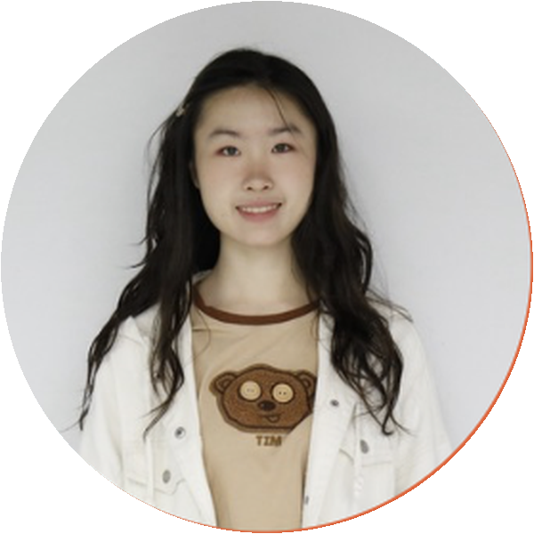

大一上系排 #01
4.25
GPA ✧
你好，我是
視覺設計 ✦ 領導統籌 ✦ 團隊協作
我喜歡將抽象的想法，轉化成清晰、有吸引力的視覺故事。用設計傳遞價值，也用溝通與協作讓創意真正發生。

01 / ABOUT ME
現就讀於國立政治大學廣告系三年級，具備視覺設計、社群內容、活動企劃與豐富團隊協作經驗。
除了設計本身，我也重視作品背後的意義、價值與故事。曾參與活動視覺設計、展覽內容製作、社群經營及企劃提案；在團隊中經常負責領導、統籌與跨組溝通，擅長整合意見、分配任務並推進執行。
02 / ACADEMIC PERFORMANCE
努力，每個學期都看得見。
廣告學系 · 大一至大二學業紀錄
03 / WHAT I DO
把想法變成有溫度的畫面
從概念發想到實際執行
04 / EXPERIENCE
CREATE · CONNECT · COLLABORATE
校園領導 / 平台營運
主席、教學組長、公開組長
團隊領導 / 社群企劃
副社長、招生長、網宣長、北區招生組美宣長
國際交流 / 跨文化溝通
國際志工計畫參與者
活動製作 / 團隊合作
道具組
視覺傳達 / 社團活動
美宣組長